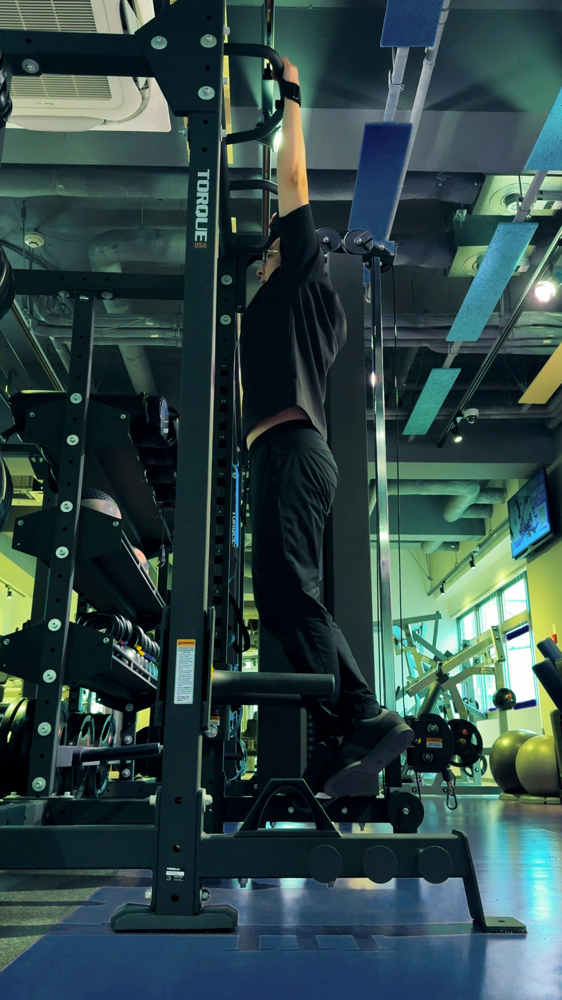
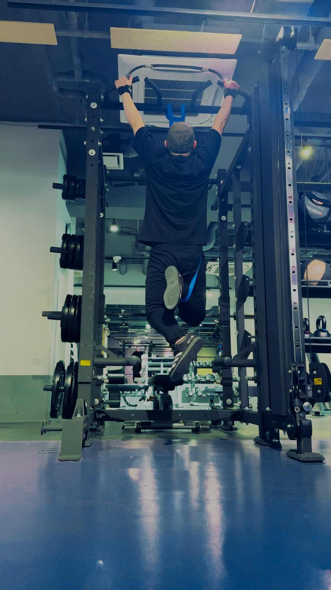
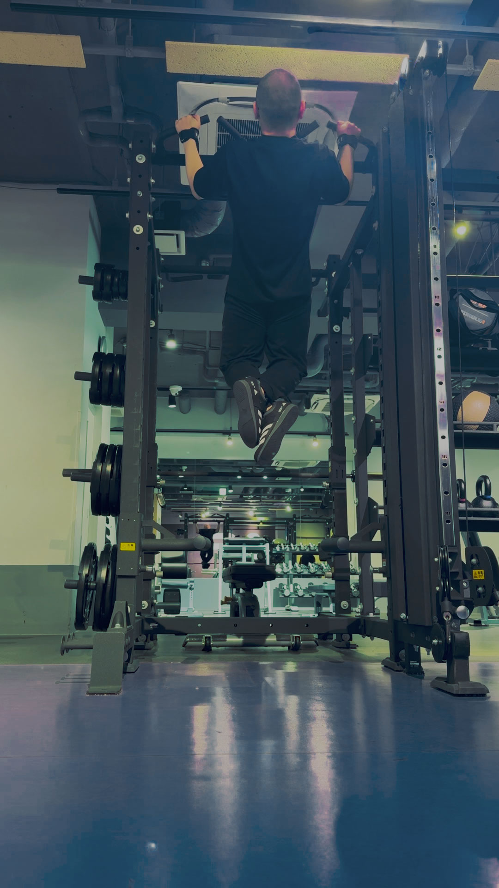
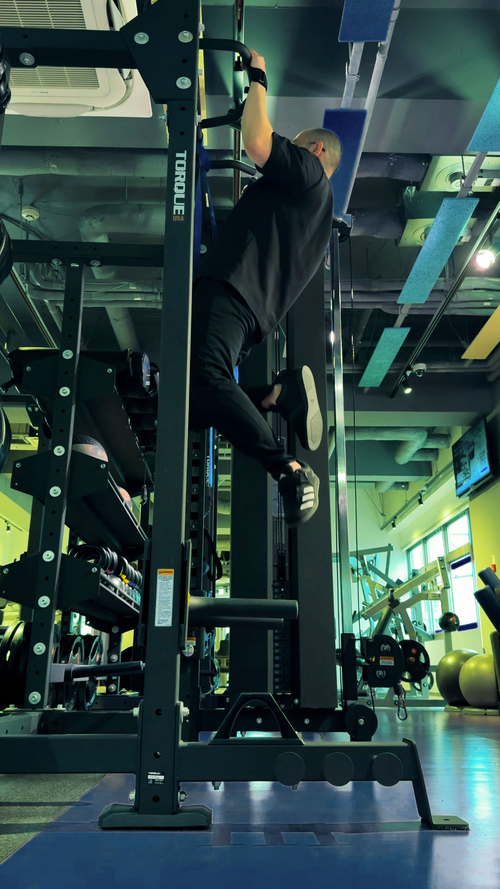
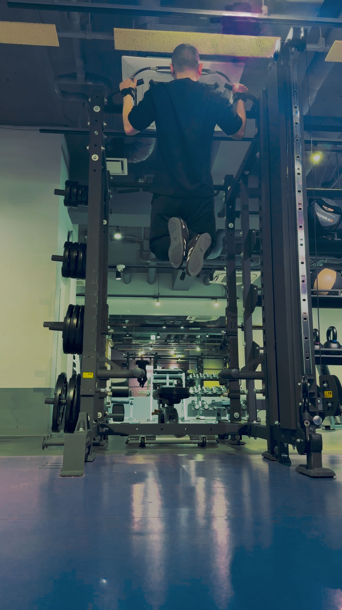

● 誰でも習得できる、懸垂ロードマップ。
懸垂は才能じゃない。
順番が、全てだ。
36歳・92kgが達成できた、
ゼロからの懸垂ロードマップ。
EMPATHY
「やってみよう」と思ってバーに近づいたが、チャレンジする勇気が出ない。
→ 意外と高い「最初の一回」という壁
力を入れているのにうまく上がらない。うまく背中がつかえない。
→ フォームの誤解が原因
毎日練習しているのに、進展がない。努力が結果に繋がらない焦り。
→ 順序が間違っていることが多い
「自分には向いていない」とだんだん諦めかけている。
→ 解決策は存在する
SOLUTION
START
ジムに通い始めて3ヶ月。バーを握るたびに何も起きない。焦りの感情が積みになって、バーに近づくことを避け始めた。
4 YEARS
正しい順番を知ってから、少しずつ体が動き始めた。できない理由は才能でも体重でもなく、「やる順番が間違っていた」だけだった。
BLANK
腕の怪我で長期離脱。復帰時は体重92kgで、懸垂は再び0回。また1から始めるしかなかった。
NOW
復帰後、同じ順番で取り組んだら、加重懸垂まで復活できた。順番に再現性があることが証明された。
BEFORE
体重
92KG
懸垂
0回
AFTER
体重
81KG
加重懸垂
+25KG
BENEFITS
01
どこに力を入れるかを身体に覚えさせ、最短ルートを習得する。
✓ 背中で引く感覚を身につける具体的解説
02
ゼロ以下だったモチベーションが変わる。成功体験を積む順番がわかるから。
✓ 自宅・公園から始められるゼロステップ
03
「初めての1回」まで全ての完全ロードマップ。4stepで出来損ない感を手放す。
✓ 90日で達成する実績済み進行プログラム
ROADMAP
1
PHASE 01 / ACTIVATION
初動種目：デッドハング
バーにぶら下がり、肩甲骨を動かす感覚を掴む。
土台になる、最初の一歩。
2週間
DURATION
週4回
FREQUENCY

2
PHASE 02 / PATTERN
種目：バンド懸垂・ネガティブレップ
ゴムバンドの補助で、自然な動きを刷り込む。
合わせて、ネガティブ動作で筋力を積み上げる。
4週間
DURATION
週3回
FREQUENCY


3
PHASE 03 / MILESTONE
種目：フォーム習得
補助なし、初めての1回を目指す。
すべての準備は、この瞬間のためにある。
3週間
DURATION
週3回
FREQUENCY


PHASE 04 / CHARGED
4
種目：回数管理・加重重量導入
10回以上連続でできるようになったら、加重を始める。
懸垂を「筋力トレーニング」として完全に機能させる。
ここから、積み上げる。
継続
DURATION
週3回
FREQUENCY
※ 各ステップは、このガイドのPDFに詳細プログラムとして収録されています。
ABOUT
上村 剛史 / KAMIMURA TAKESHI
懸垂が一番好きな種目だった人間が、怪我でゼロに戻り、また同じ場所まで戻ってきた。このサイトは、その過程で気づいた取り組み方を、同じように悩んでいる人に伝えるために制作した。
あなたにもできる。
● PULL-UP LAB
0回から1回を突破するための全手順
🔒 各種登録・個人情報は一切不要です